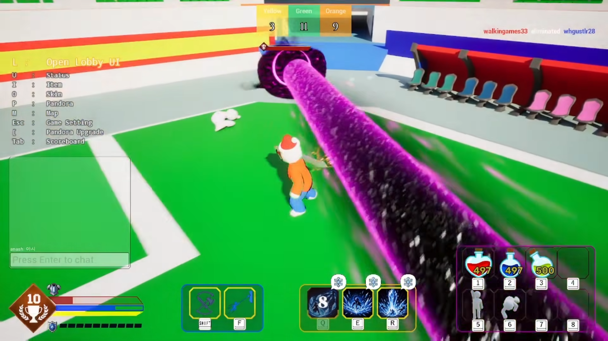
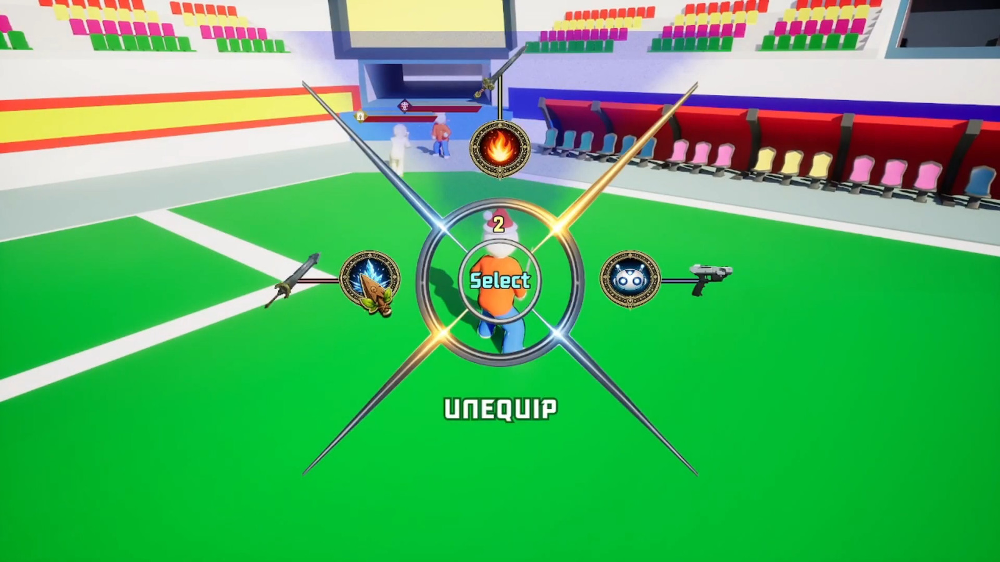

BUILDING SYSTEMSTHAT PLAY TOGETHER.
Unreal Engine으로 멀티플레이 전투 시스템을 설계하고 구현합니다.
Pandora Battle을 기획부터 Steam 출시까지 혼자 완성했습니다.

DEVELOPER
ENGINE
SYSTEM
ARENA
INTEGRATION
SOLO DEVELOPMENT · UNREAL ENGINE · PC
Pandora Battle
빠른 템포의 멀티플레이 PvP 아레나. 무기, 판도라 스킬, 포지셔닝과 타이밍을 조합해 싸우는 전투 게임입니다.

무기와 판도라 선택 · 전투 상황에 맞춰 바꾸는 로드아웃
전투, 네트워크, AI, 아이템, UI, Steam 연동까지 게임의 핵심 시스템을 직접 설계하고 연결했습니다.
What I Built
기술 이름보다 실제 게임에서 어떻게 사용했는지 보여주는 핵심 구현 영역입니다.
Gameplay Ability System
Ability, Attribute, Gameplay Effect, Gameplay Tag를 기반으로 스킬·쿨다운·코스트·상태 효과를 데이터 중심 구조로 구현했습니다.
Multiplayer
Listen Server 기반 PvP 아레나에서 세션, 로비, 매치 흐름과 전투 복제를 구성하고 네트워크 환경을 고려한 게임플레이를 구현했습니다.
Steamworks
Steam 세션, 친구 초대, 닉네임, 업적 등 실제 출시 흐름에 필요한 Steamworks 기능을 게임 시스템과 연동했습니다.
Combat AI
Behavior Tree 기반 추적·배회·공격 로직과 근거리/원거리 전투 대응을 구성해 트레이닝 환경에서도 반복 테스트가 가능하도록 했습니다.
Inventory & Equipment
PlayerState 중심 인벤토리, 스택, 필터, 장비/해제, 퀵슬롯을 분리해 멀티플레이 환경에서도 확장 가능한 구조로 설계했습니다.
From Combat to Release
하나의 전투 데모가 아니라, 플레이 가능한 게임 전체 흐름을 연결했습니다.
Explore the Code.
구조를 이해하는 데 중요한 클래스 100개를 우선순위와 기능별 관계도로 나눴습니다. 무엇을 저장하고, 어떤 설정을 읽어 실행하는지 연결해서 보여줍니다.
100 CORE CLASSES · 9 SYSTEMS기능별 관계도 · 실제 필드와 하위 데이터 · 연결의 의미 · GitHub 헤더
관계도 크게 열기 ↗블록을 클릭하면 GitHub 헤더가 열립니다. 데이터 버튼에서 저장 필드와 정의 에셋의 내용을, 화살표에서 관계의 의미와 소스 근거를 확인하세요. 핵심 100개 링크 목록 ↗
Problem → System
실제 구현에서 책임을 나누고, 데이터와 실행 흐름을 연결한 설계입니다.
서버 권한을 기준으로 연결한 전투 흐름
능력 실행과 상태 변경의 권한을 구분하고, 로드아웃·인벤토리의 변경 결과가 각 클라이언트에 반영되도록 구성했습니다.
기능 추가가 쉬운 데이터 중심 설계
매치 규칙, 스킬 데이터, 무기 정보를 코드에 고정하지 않고 Data Asset과 컴포넌트로 분리해 반복 작업 비용을 줄였습니다.
개발부터 Steam 출시까지 하나의 프로젝트로
전투 시스템뿐 아니라 로비, 세션, 업적, 트레이닝, UI, 스토어 대응까지 실제 플레이 가능한 제품 흐름을 완성했습니다.
Building the next
playable system.
게임플레이 시스템을 구조화하고, 네트워크 환경에서 실제로 동작하는 결과물까지 완성하는 Unreal Engine 프로그래머입니다.
조현식 · Unreal Engine Gameplay Programmer